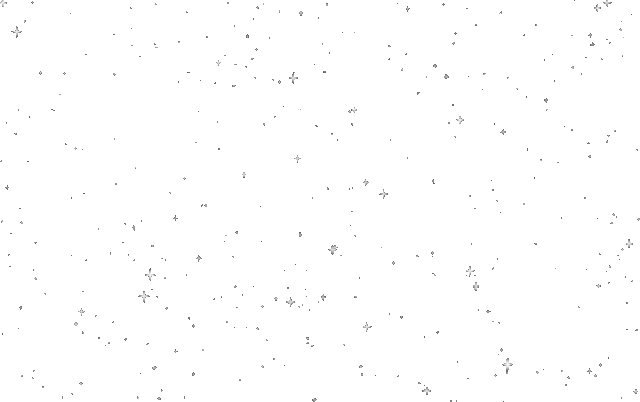
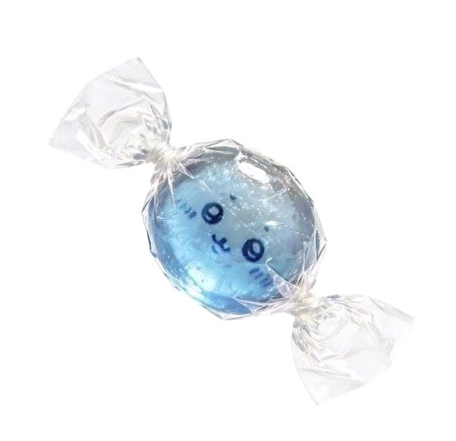
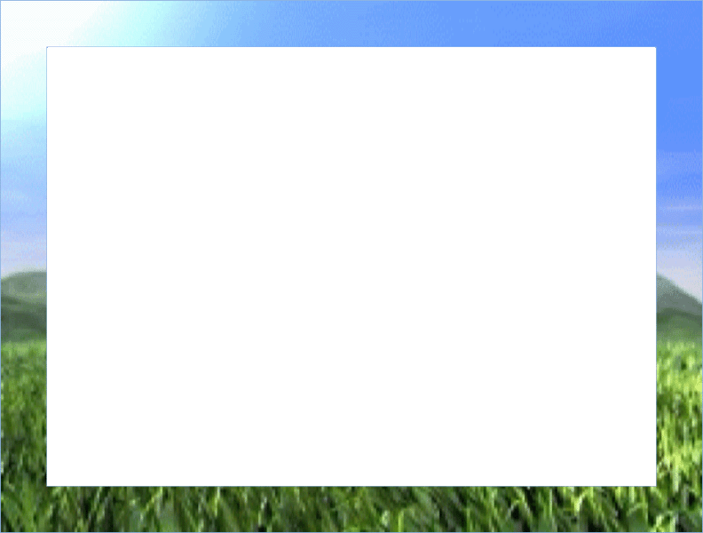
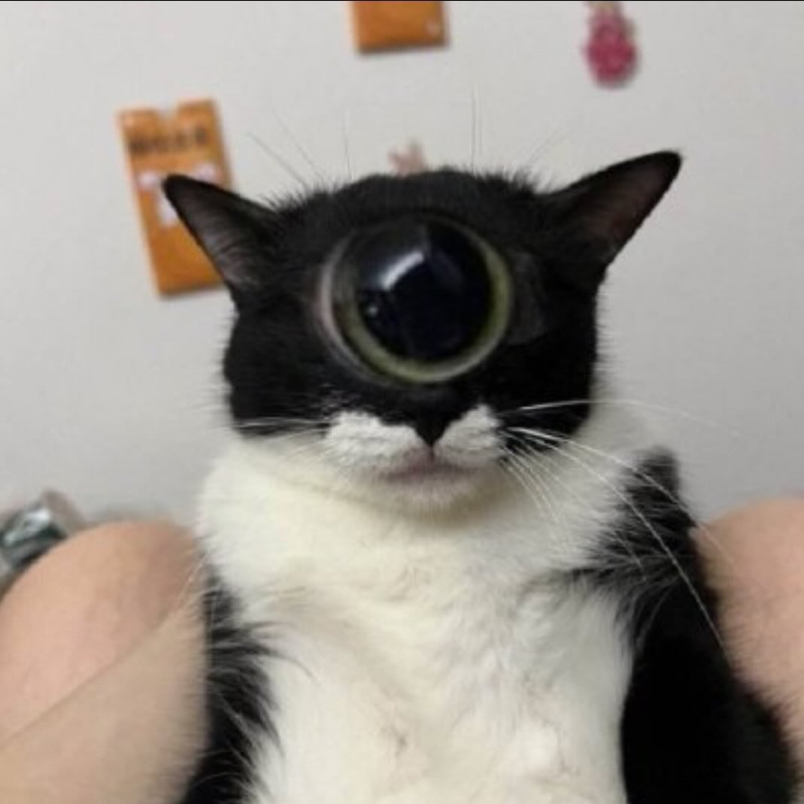
Do androids dream of electric sheep?
What decision have you made for yourself in this game of beginnings ? How do I prove that I exist? Do words have these fixed meanings? How do you get out ? Where do we determine where to focus our consciousness? Why ? What lies beyond words??
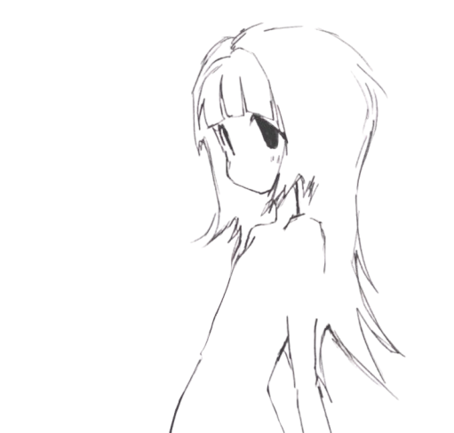
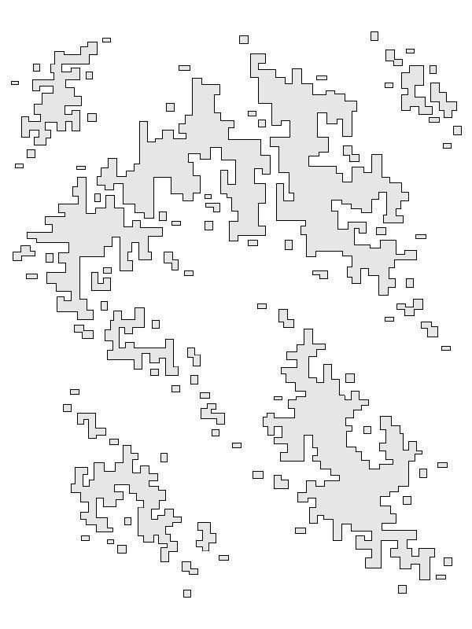
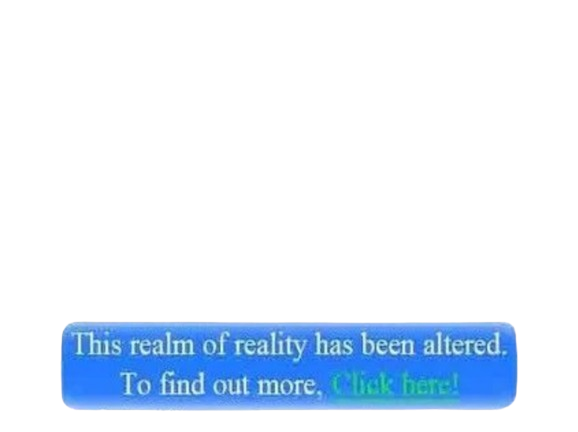
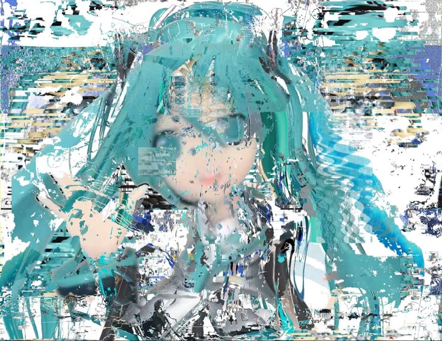
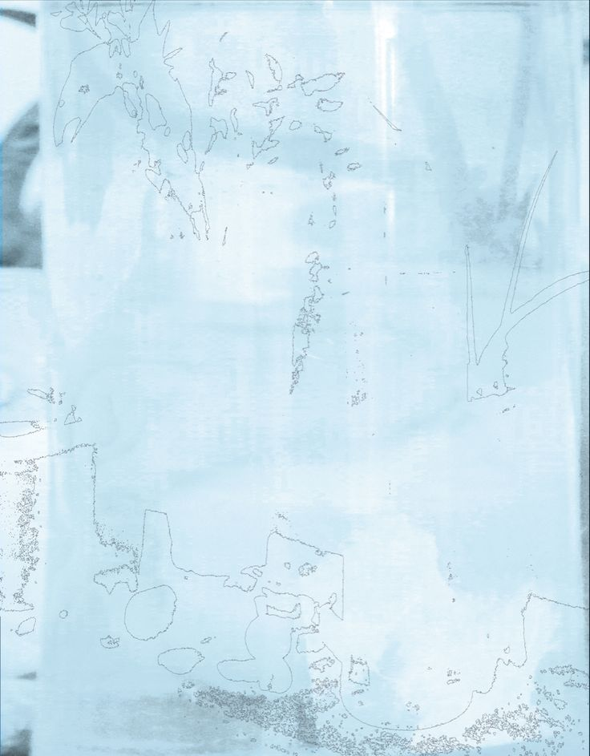
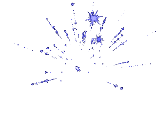
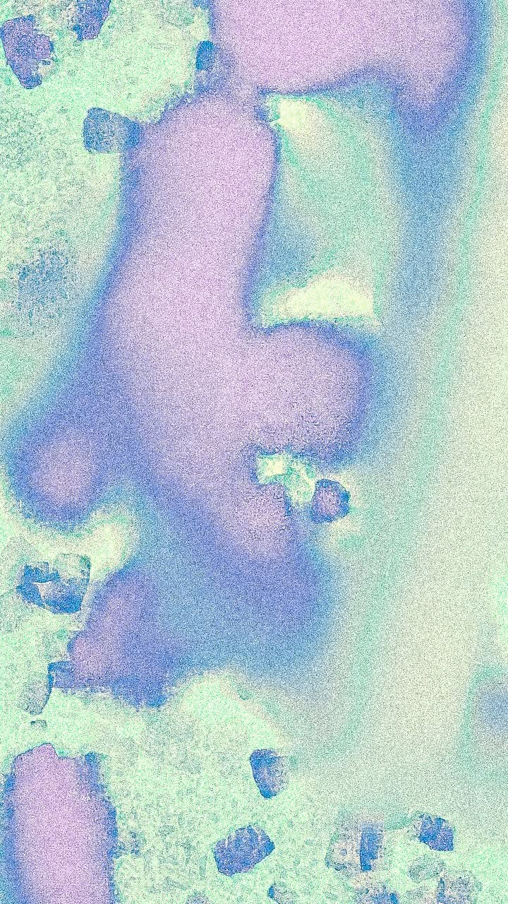
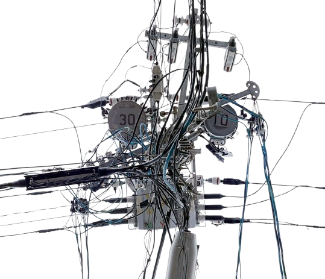
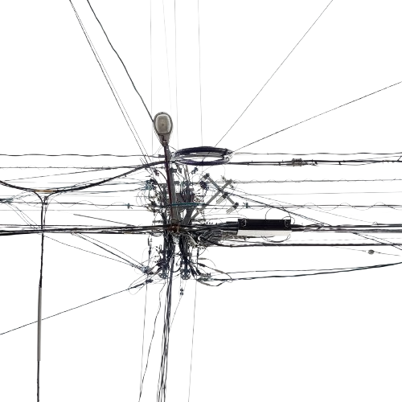
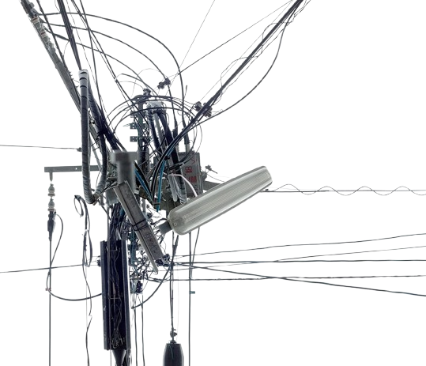
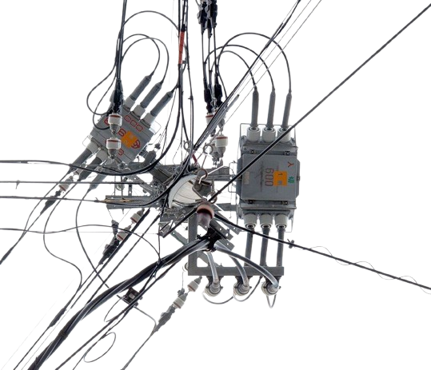